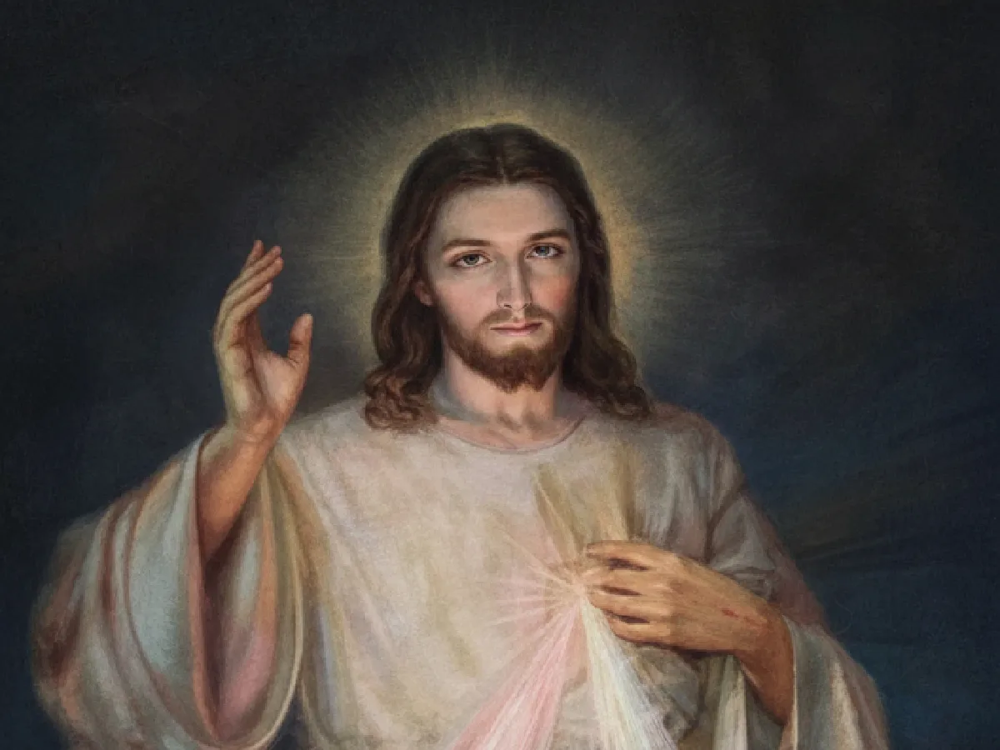
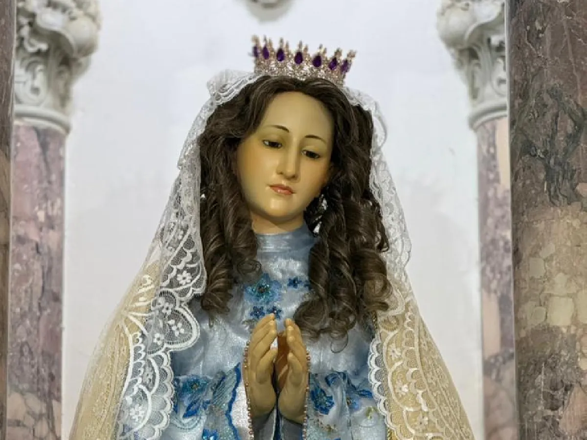
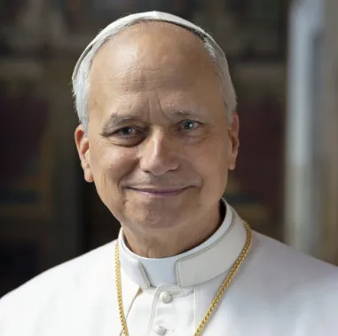
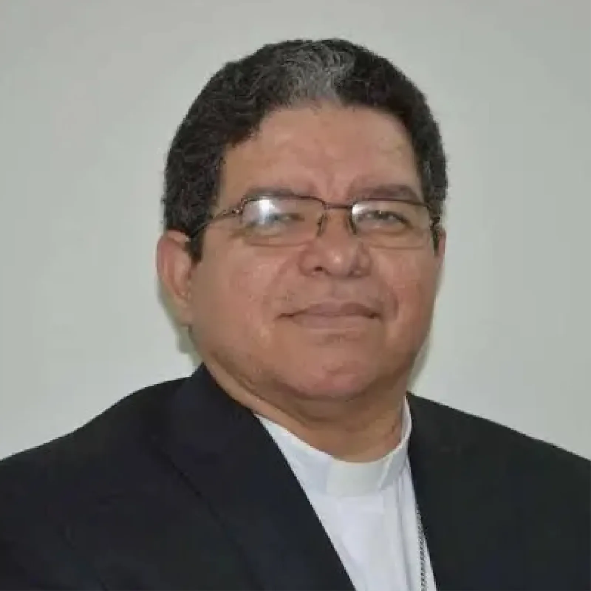
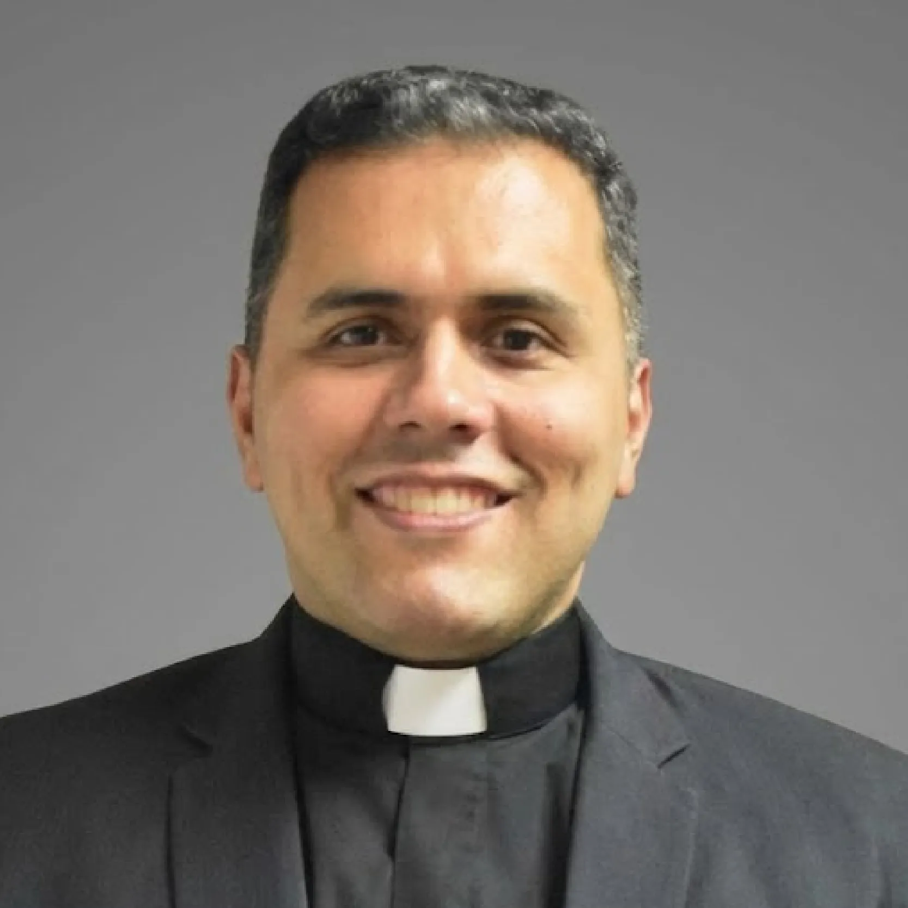

Nuestra Identidad
Conoce las raíces y el corazón de la Casita Azul.
El Centro de Todo
Jesucristo, Señor de la Historia
Nuestra parroquia no es una ONG ni un club social; somos, ante todo, una comunidad de discípulos reunidos en torno al Resucitado.
Jesús es el Camino, la Verdad y la Vida de esta "Casita Azul". Cada sacramento que celebramos, cada pan que compartimos con el necesitado y cada canto que entonamos tiene un solo fin: encontrarnos con Él y darlo a conocer al mundo.


Bajo su Manto
María, Madre y Maestra
No caminamos solos; vamos de la mano de la Madre. En esta tierra zuliana, el amor mariano es el latido que impulsa nuestra fe.
Ella es la primera cristiana, la que nos enseña a decir "Sí" a la voluntad de Dios. En nuestra comunidad, veneramos su presencia maternal, sabiendo que, como en las bodas de Caná, ella siempre nos dice: "Hagan lo que Él les diga".
Luz para Maracaibo
Santa Lucía, Virgen y Mártir
Su nombre significa "portadora de luz". En un mundo que a veces parece oscurecerse, nuestra patrona nos recuerda que la fe ilumina incluso los momentos más difíciles de la historia.
En el corazón del pueblo marabino, su devoción ocupa un sitial de honor, siendo la más arraigada y fervorosa después de Nuestra Señora de Chiquinquirá. Es la indiscutible "Reina de El Empedrao", a quien los gaiteros le cantan con amor cada diciembre y a quien miles de zulianos acuden buscando claridad para sus ojos y paz para su alma.
En nuestra parroquia, custodiamos con celo esta herencia sagrada, buscando ser, al igual que ella, un faro de esperanza y caridad para todos los hermanos de la comunidad.


La Crónica de nuestra Casa
El Corazón de "El Empedrao"
Nuestra historia comenzó mucho antes de poner la primera piedra. Desde 1834, los vecinos de este tradicional barrio se reunían con un sueño: tener su propio templo para no tener que cruzar las cañadas difíciles que los separaban de la Catedral.
Ese anhelo se hizo realidad en el siglo XIX (1867-1876) bajo el mandato del General Venancio Pulgar, levantando una joya arquitectónica única en Maracaibo: un templo de estilo neogótico que hoy es ícono cultural del Zulia.
Pero lo que ves hoy es fruto del amor de sus hijos. En el siglo XX, bajo la guía del Pbro. José Luis Castellano, el templo fue reconstruido casi en su totalidad con el aporte exclusivo de la feligresía, manteniendo sus hermosos arcos y convirtiéndose en el hogar definitivo de nuestra Patrona y de la querida devoción a San Benito de Palermo.
Nuestros Guías
La Iglesia es un cuerpo vivo. Conoce a quienes, por gracia del sacramento del Orden, guían y acompañan el caminar de nuestra comunidad.

SS. León XIV
Pastor de la Iglesia Universal
Sucesor de San Pedro y pastor de la Iglesia universal, quien garantiza la unidad de todos los fieles en comunión con Cristo.

Excmo. Mons. José Luis Azuaje Ayala
Arzobispo de Maracaibo
Sucesor de los apóstoles y pastor principal de nuestra Iglesia local, quien nos une en comunión con toda la Iglesia universal.

Pbro. Rafael Ángel Villalobos Carmona
Párroco
Padre y guía espiritual de la comunidad de Santa Lucía, encargado de administrar los sacramentos y acompañar a los fieles en su día a día.
Ambientes Seguros
Nuestra parroquia Santa Lucía está firmemente comprometida con la cultura del cuidado, el buen trato y la protección de menores y adultos vulnerables, en estricta comunión con los lineamientos del Papa Francisco y la Arquidiócesis de Maracaibo.
Conocer nuestras políticas →